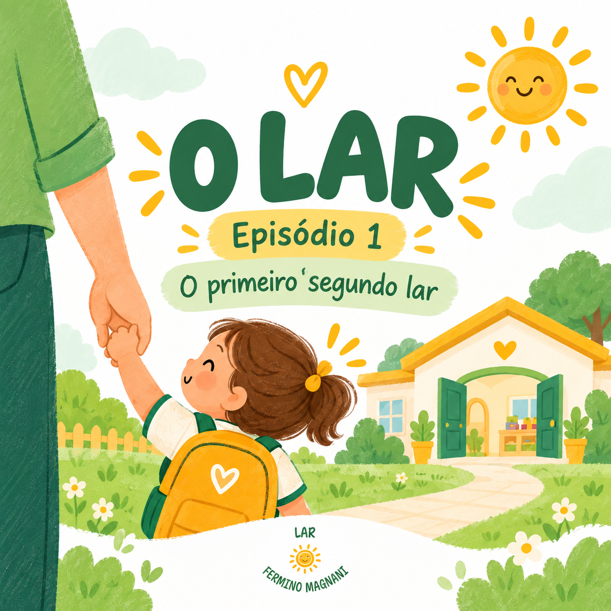
Episódio 01
Podcast — Episódio 1
Conheça um pouco mais sobre o trabalho e a história do Lar da Criança.
Um pouco dos espaços, encontros e atividades que fazem parte da rotina do Lar da Criança.
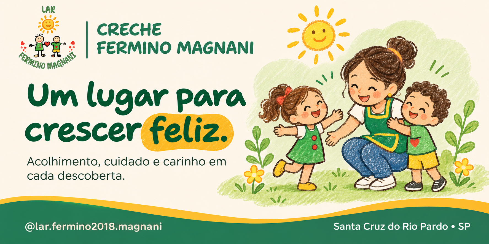
Memórias de convivência, aprendizagem e cuidado.
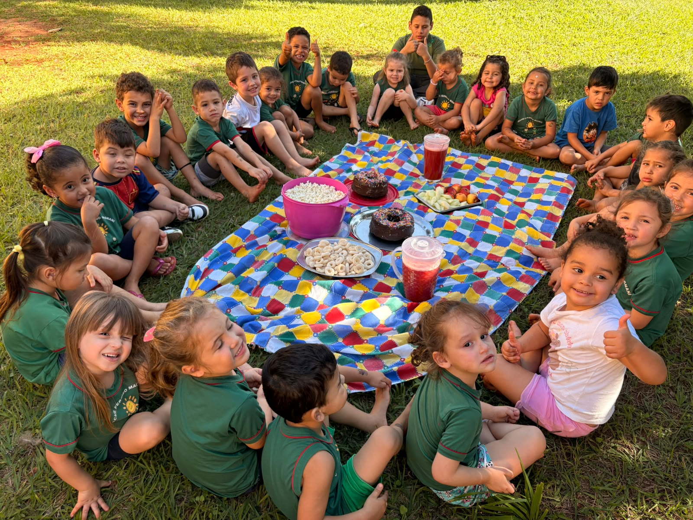
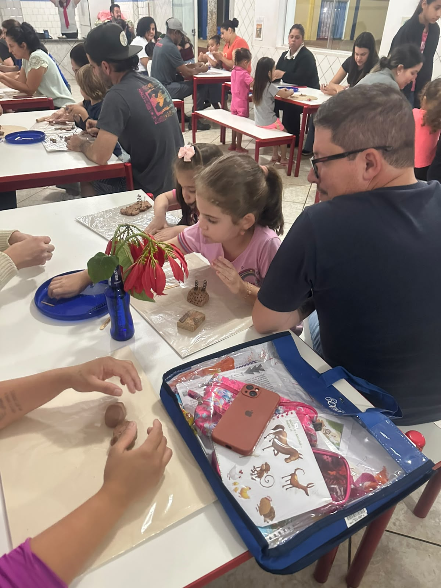
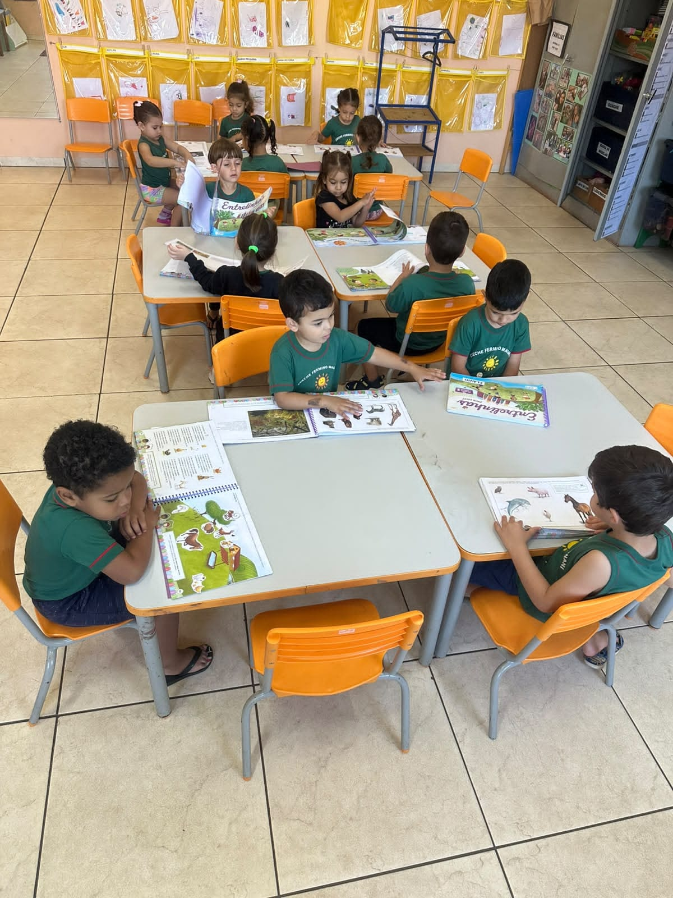
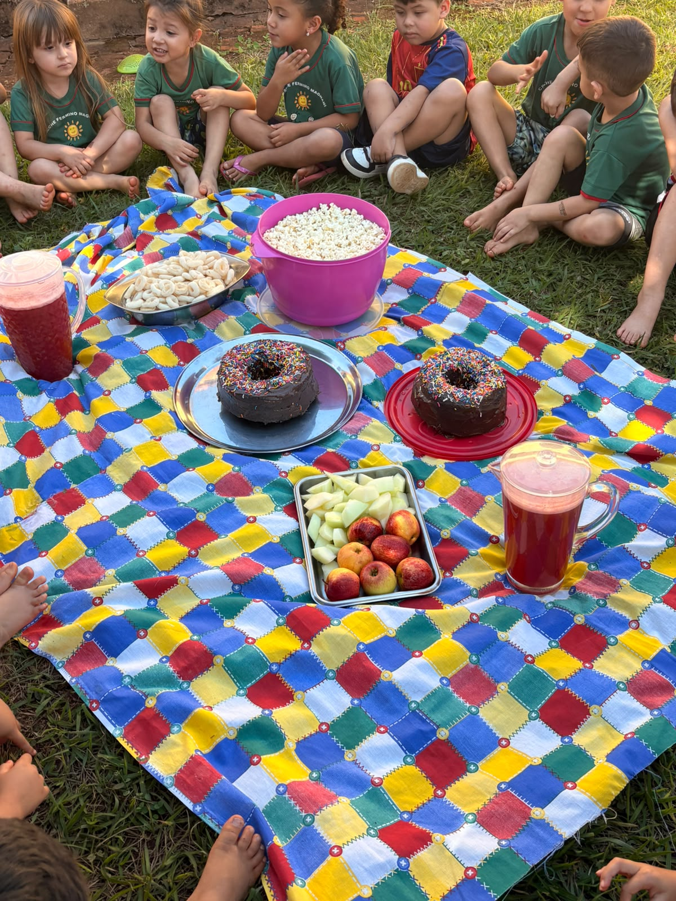
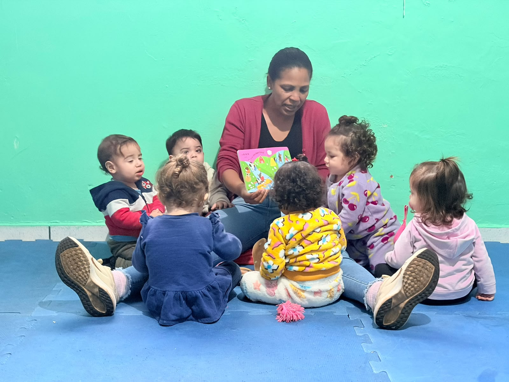
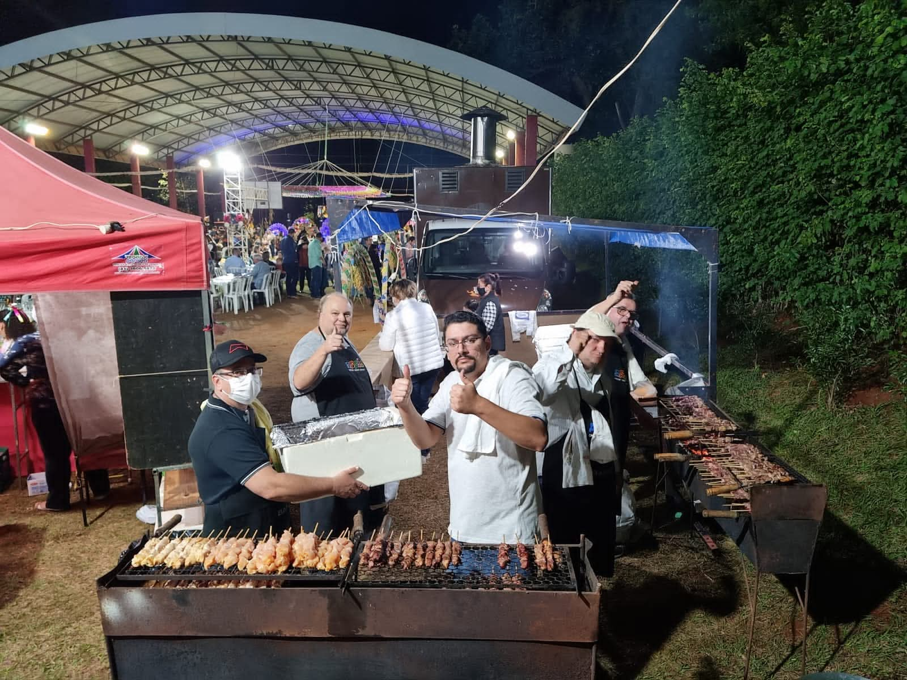

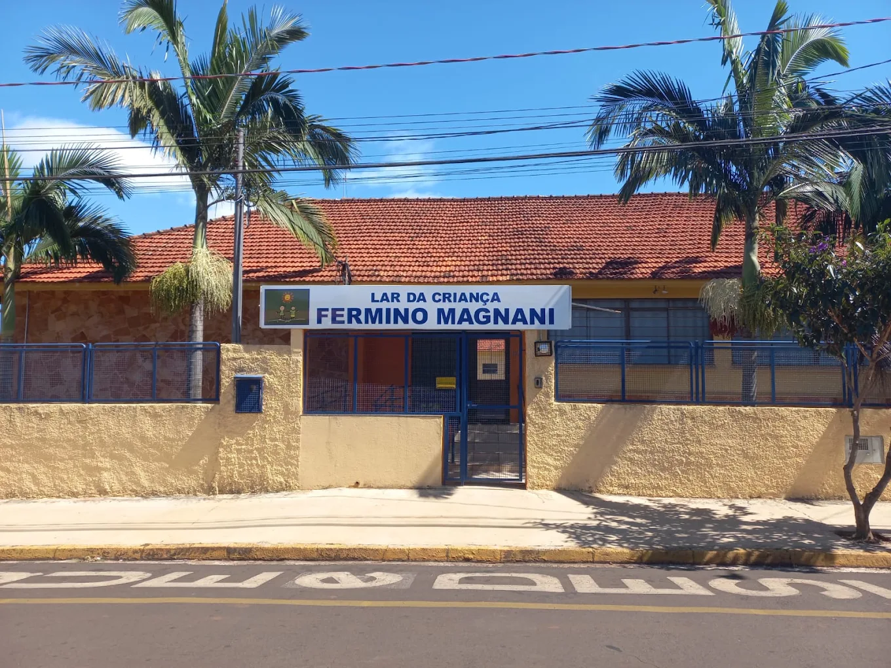
Conversas e histórias sobre o trabalho, as experiências e a importância do Lar da Criança para nossa comunidade.

Conheça um pouco mais sobre o trabalho e a história do Lar da Criança.
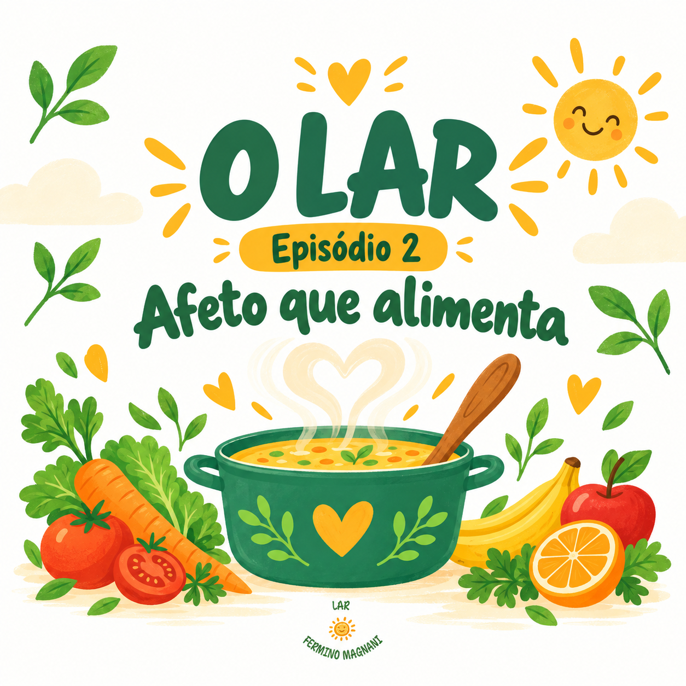
Uma conversa especial sobre as experiências e iniciativas da instituição.
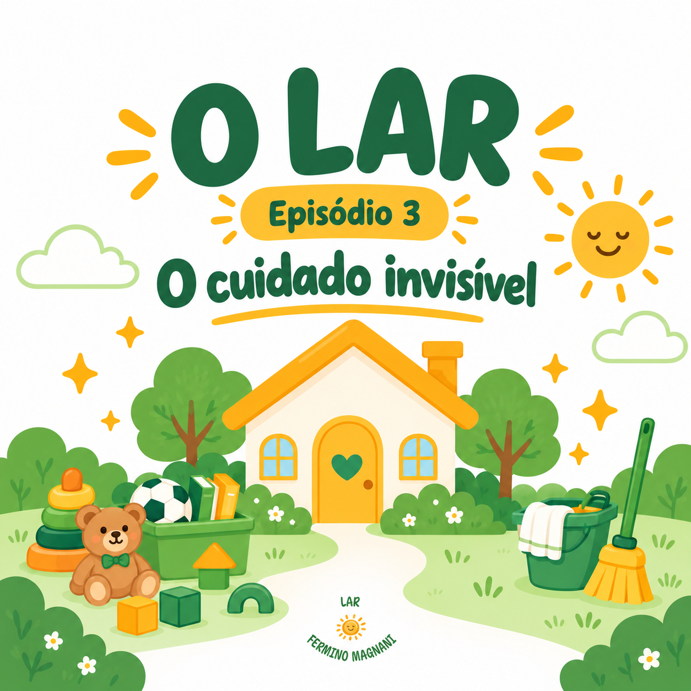
Mais histórias e informações sobre o impacto do Lar na comunidade.